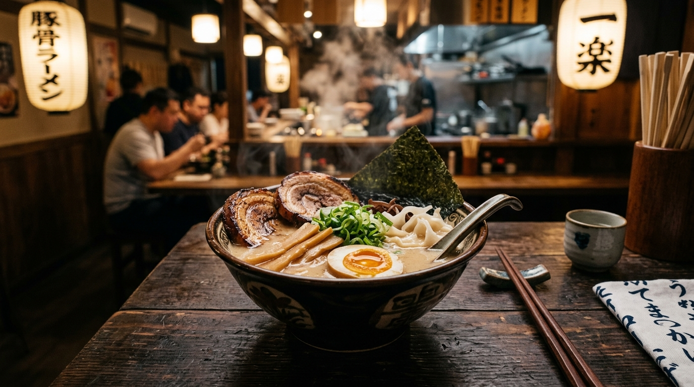

18-Hour Tonkotsu
Simmering premium Berkshire pork marrow bones at rolling boils for 18 continuous hours to emulsify bone marrow and collagen into velvety white broth.
Discover Broth Craft →South Charlotte's authentic Japanese ramen bar and izakaya gathering destination. Named after the Japanese word for family (Kazoku), we slow-simmer heritage pork marrow bones for over 18 hours to extract collagen-rich, silky white broth paired with springy noodles, melt-in-your-mouth chashu, and crisp izakaya small plates at 8943 Rea Road.

18-hour marrow reduction, precision noodle hydration, & izakaya warmth.
Simmering premium Berkshire pork marrow bones at rolling boils for 18 continuous hours to emulsify bone marrow and collagen into velvety white broth.
Discover Broth Craft →Crispy pan-seared pork gyoza with golden skirts, tender takoyaki octopus balls, garlic edamame, and double-fried Japanese chicken karaage.
Discover Izakaya →8943 Rea Rd in Promenade on Providence. Welcoming lunch gatherings, date nights, and comforting solo counter dining 7 days a week.
View Hours & Location →